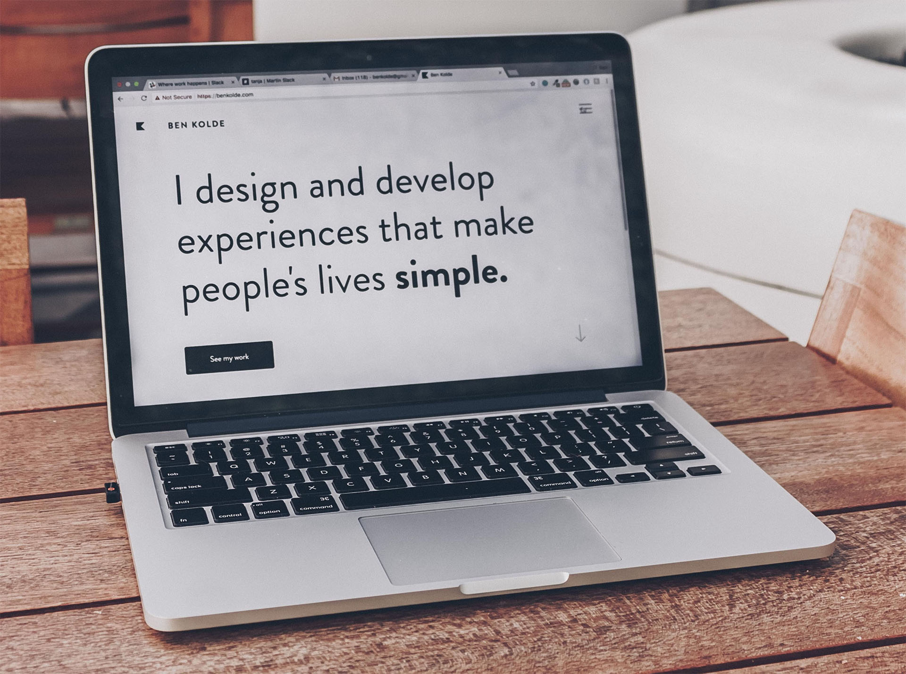

På denne side skal du lave en responsiv menu i et niveau.
Det grundlæggende indhold på siden er lavet for dig. Det samme gælder den grundlæggende styling.
Vær opmærksom på, at menulinjen i desktop-versionen er lavet som en vandret flexbox. Den skal i mobil menuen laves om til en lodret flexbox.
Desktop menuen er allerede lavet færdig for dig. Det er den styling, der slår igennem i media query'en @media only screen and (min-width: 768px). Du skal lave mobil menuen.
Derudover er der anvendt nogle få klasser til hamburger menu ikonerne.
"Checkbox tricket" til mobilmenuer
Hamburger menuen er baseret på et lille trick, som kaldes "checkbox tricket". Det laves ved at sætte en gennemsigtig checkbox foran hamburger menu ikonet (og lukke-ikonet), så i stedet for at klikke på de to ikoner, så klikker man i virkeligheden i en checkbox (afkrydsningsboks) og enten sætter eller fjerner et kryds i den. Checkboxen er gjort usynlig og ligger henover ikonerne til at åbne og lukke menuen, så brugeren får aldrig checkboxen at se (eller de krydser, som han/hun sætter, når menuen bliver åbnet og lukket).
Det smarte ved det trick er, at man kan teste på, om brugeren har sat kryds i eller fjernet krydset i checkbox'en vha CSS.
CSS pseudo-selectoren :checked kan bruges til den styling, som skal slå igennem, når brugeren har klikket på checkboxen (hamburger menu ikonet).
Så hvis du styler på nav .menu-btn:checked ~ul, så styler du på den ul, som kommer i samme niveau som din checkbox (~ tegnet betyder, at den er søskende til din checkbox). Ul'en i samme niveau som din checkbox er din menu. Styling på .menu-btn:checked ~ul slår kun igennem, hvis brugeren har klikket på checkboxen og "sat kryds i den", selvom brugeren aldrig kommer til at se det kryds.
Når du åbner siden i din browser, så tjek sidens responsivitet ved at trække vinduet bredere og smallere. På siden her er der sat et responsivt breakpoint ved 768px. Pas på med at bruge den responsive visning, som findes i "inspicer"/"udviklerværktøjet" - de kan godt give en forkert visning.
Hvis du har brug for mere hjælp til at løse opgaven, så spørg Hanne!